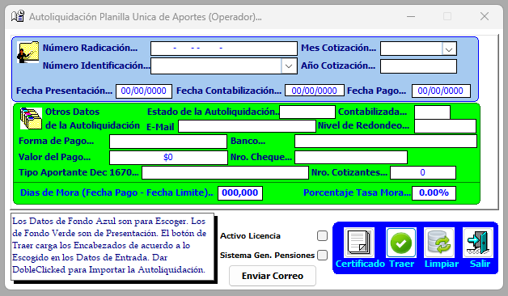
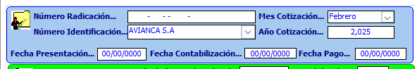
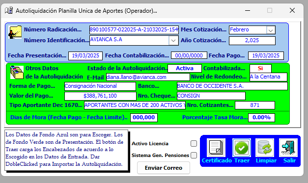
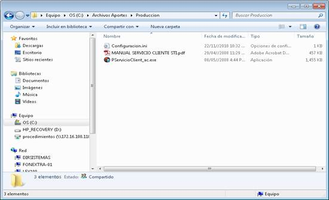
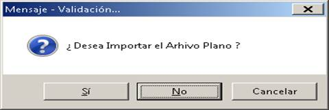
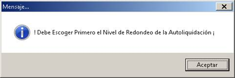
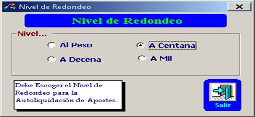
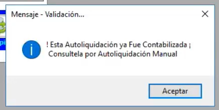
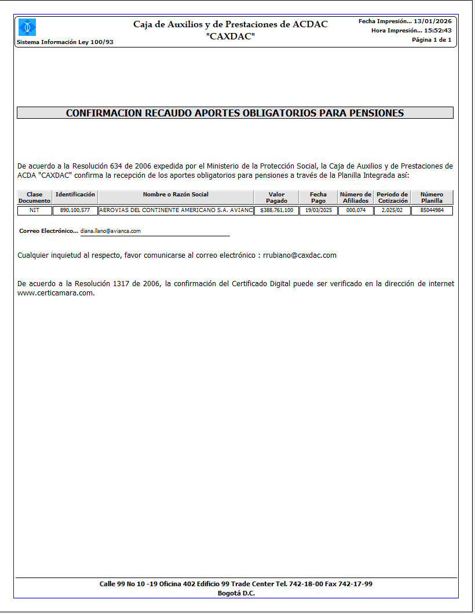

Para cargar y aplicar de forma automática los aportes a la seguridad social que provienen de los archivos planos de la Planilla Integrada (PILA), permitiendo que el sistema valide, procese y registre la información sin necesidad de liquidación manual por parte del usuario. Este proceso asegura que los aportes queden correctamente aplicados en términos de afiliados, periodos, conceptos y fondos, conforme a la normatividad vigente de la Ley 100.

Como ejemplo para el cargue del archivo plano, se utiliza la empresa Avianca, de la cual se debe digitar el número de identificación (o nombre de la empresa de aviación), mes y año de cotización.

Se da Enter o presiona el botón de Traer para jalar la información relacionada.

Seguidamente con doble clic, el sistema solicita la ruta del archivo plano de la PILA previamente descargado (el archivo plano se descarga del programa PservicioClient_ac.exe que está instalado en el PC del Analista de Afiliados y Aportes).

Al dar doble clic sobre cualquier lugar de la autoliquidación, el sistema envía la validación:

Al dar clic en sí, el sistema pedirá seleccionar el nivel de redondeo (el cual se escoge de acuerdo a la normatividad vigente:


Al dar clic en salir, el sistema envía la siguiente validación.
Aquí se encuentra toda la validación que el sistema hace referente al archivo plano, en caso de que se encuentren inconsistencias, este las informa una a una.
Si una autoliquidación y fue realizada, se mostrará el siguiente mensaje:

Adicionalmente, si se requiere se puede generar un certificado como el siguiente.
